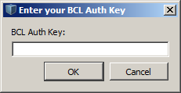
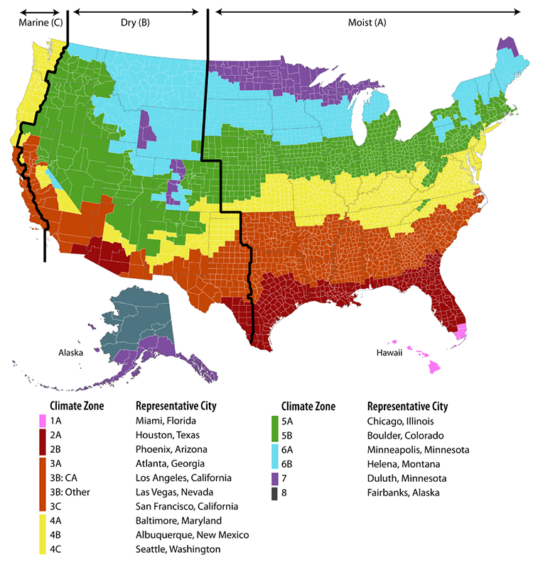

Installation and Introductory Tutorial
This page walks you through installing OpenStudio, the basics of the applications, and the basic workflow.
Installation Instructions
OpenStudio is supported on Windows 7 – Windows 10, OS X 10.9 – 10.10, and 64-bit Ubuntu 14.04.
OpenStudio 1.10.0 supports EnergyPlus Release 8.4.0, which is bundled with the OpenStudio installer. It is no longer necessary to download and install EnergyPlus separately. However, an installer is available at https://github.com/NREL/EnergyPlus/releases/tag/v8.4.0. Other builds of EnergyPlus 8.4 are not supported by OpenStudio 1.10.0.
OpenStudio 1.10.0 supports Radiance 5.0.a.5, which is bundled with the OpenStudio installer. It is no longer necessary to download and install Radiance separately. However, an installer is available at https://github.com/NREL/Radiance/releases/tag/5.0.a.5. Other builds of Radiance are not supported by OpenStudio 1.10.0.
Installation Steps
Download and install SketchUp
- The OpenStudio SketchUp Plug-in requires SketchUp 2016 (not available for Linux). The OpenStudio SketchUp Plug-in does not support older versions of SketchUp. SketchUp 2016 is available in 32 and 64-bit versions; the 32-bit version of OpenStudio on Windows will only work with the 32-bit version of SketchUp 2016, and the 64-bit version of OpenStudio will only work with the 64-bit version of SketchUp 2016.
Download and install OpenStudio
- Login to the OpenStudio website. Create an account if you don't have one. EnergyPlus and OpenStudio now share a password.
- Click "Downloads" at the top of the page.
- Choose the installer that matches your operating system. The OpenStudio package contains the following tools:
- SketchUp Plug-in
- OpenStudio Application
- Parametric Analysis Tool(PAT)
- ResultsViewer
Optional - Setup a Building Component Library (BCL) Account BCL content can now be accessed from within the OpenStudio SketchUp Plug-in and from the standalone OpenStudio application. To take advantage of this integration, you will need to follow the steps outlined here to request a BCL key.
- Login to Building Component Library (BCL). Create an account if you don't have one. Follow the instructions from the email sent to you upon registration and then login.
- Click on the
My Dashboardnear the top right of the website. - Copy the text after
API v1.1 key: then paste the key into the SketchUp Plug-in, the OpenStudio application, or the Parametric Analysis Tool (PAT). You only need to configure the key in one place and it will be used globally throughout the OpenStudio tools. Additionally, this key will be maintained when you install updates to OpenStudio.
Enter the key through the OpenStudio SketchUp Plug-in under the menu Plugins->OpenStudio User Scripts->Building Component Library->Setup BCL Key and click OK. Or register the key through the OpenStudio Application under the menu Components & Measures->Find Components. If a key is not already registered, it will prompt you for one.

Optional - Install Ruby If you plan to use the OpenStudio SDK Ruby bindings via command prompt on Windows, you must install Ruby. OS X already has Ruby installed.
- Download the Ruby 2.0.0 installer. If you have the Windows (x64) version of OpenStudio (Help>About>Compiler shows Visual Studio 12 2013 Win64), you'll need the x64 Ruby installer. If you have the Windows (x32) version of OpenStudio, you'll need the non-x64 Ruby installer.
- Add
C:\Ruby200\bin(or wherever you installed Ruby) to the PATH environment variable. Detailed instructions. -
Create a text file with the following text inside:
require 'C:\Program Files (x86)\OpenStudio 1.7.0\Ruby\openstudio.rb' -
Save the file as
openstudio.rbhere:C:\Ruby200\lib\ruby\site_ruby\openstudio.rb(next to the2.0.0folder). - Test your installation by opening a command prompt and typing:
irbENTER. Then, typerequire 'openstudioENTER. If you see some QSslSocket messages and => true, it's working.
Workflow Overview
After installing OpenStudio you will have the SketchUp Plug-in, OpenStudio Application, Parametric Analysis Tool (PAT) and ResultsViewer. The typical OpenStudio workflow is shown in the diagram below.
{kind=link}
About: Click on the diagram above to view a larger version.
ResultsViewer is used to view simulation results. The section on Running Simulation & Viewing Results has information on using ResultsViewer.
Quick Start Guide to OpenStudio Modeling Tools
The OpenStudio Quick Start Guide (PDF) provides an introduction to the interface for the Plug-in and the OpenStudio application. It also provides guidance on the basic workflow. Read the Introductory Tutorial below to get started.
Quick Start Guide to the Parametric Analysis Tool (PAT)
The Parametric Analysis Tool Quick Start Guide (PDF) and the Parametric Analysis Tool Interface Guide provide an introduction to the interface and workflow for creating multiple design alternatives from a seed model.
Introductory Tutorial
The tutorial below was created before the grid view was added to the Space Types and Thermal Zones tabs. Grid view allows you to view and edit more than one space type or thermal zone at a time. Go to the OpenStudio Application Interface Guide to learn more about grid view.
Selecting a Template for Constructions in SketchUp using the OpenStudio Plug-in
Templates contain data for constructions, loads, and schedules for 6 vintages across all U.S. climate zones. Templates do not contain any geometry. Load templates by using the menu under Extentions/OpenStudio User Scripts/On-Demand Template Generators/Space Type and Construction Set Wizard. Then select your type of building, vintage, and climate zone from the dialog. You can also get standard space types for that template by choosing "true" on the dialog. Space types can define internal loads, schedule sets, and construction sets. It can take a few minutes to load.

Above: Load a new template using the menu.

Vintages:
- DOE Ref Pre-1980
- DOE Ref 1980-2004
- DOE Ref 2004
- 90.1-2010
- 189.1-2009
- 90.1-2007
Climate Zones: 1 - 8

SketchUp Plug-in - Building Envelope
For additional information on the SketchUp Plug-in interface, go to the OpenStudio SketchUp Plug-in Interface Guide section.
Above: This video shows you how to create your building envelope. It uses the OpenStudio SketchUp Plug-in.
SketchUp Plug-in - Space Types and Thermal Zones
Above: This video shows you how to assign space types, thermal zones, and thermostats to the spaces in your model. It uses the OpenStudio SketchUp Plug-in.
Site, Facility, and Basic Run
Above: This video goes into the OpenStudio application, adds weather data, shows the outline view in the facility tab, and runs a simulation with ideal air loads.
Above: Version 1.9.0: This video demonstrates the new Spaces tab and the redesigned Facilities and Site tab.
Space Types, Internal Loads, and Schedules
Above: This video demonstrates how you can inspect, alter, and apply resource objects in OpenStudio.
Constructions, Materials, and the Building Component Library (BCL)
Above: This video shows you how to obtain construction and material objects from the Building Component Library and load them into your current model.
HVAC - Zone Equipment, Air Loops, and Plant Loops
Above: This video shows you how to add HVAC systems. It introduces the variable and scripts tabs and runs a simulation with the resulting model.
Service Hot Water
Above: This video shows you how create models using service hot water. This includes water heaters, water use connections, water use equipment, and other associated objects.